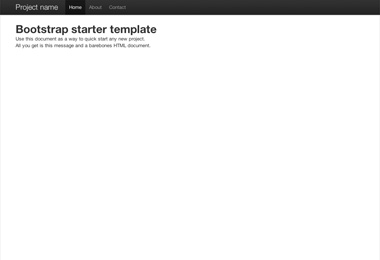

Bootstrap 入门案例
Bootstrap提供了一些基础例子，以便于快速上手。我们鼓励用户对这些例子进行扩展，而不是简单地照搬。
-

基本的市场类市场
由一个主角单元(hero unit)强调首要内容，搭配三个辅助区动。
-

流式布局
使用流动栅格系统，符合响应式设计的无缝流式布局。
-

初始模板
包含所有Bootstrap样式和js的空白HTML文档。
Bootstrap提供了一些基础例子，以便于快速上手。我们鼓励用户对这些例子进行扩展，而不是简单地照搬。
由一个主角单元(hero unit)强调首要内容，搭配三个辅助区动。
使用流动栅格系统，符合响应式设计的无缝流式布局。
包含所有Bootstrap样式和js的空白HTML文档。